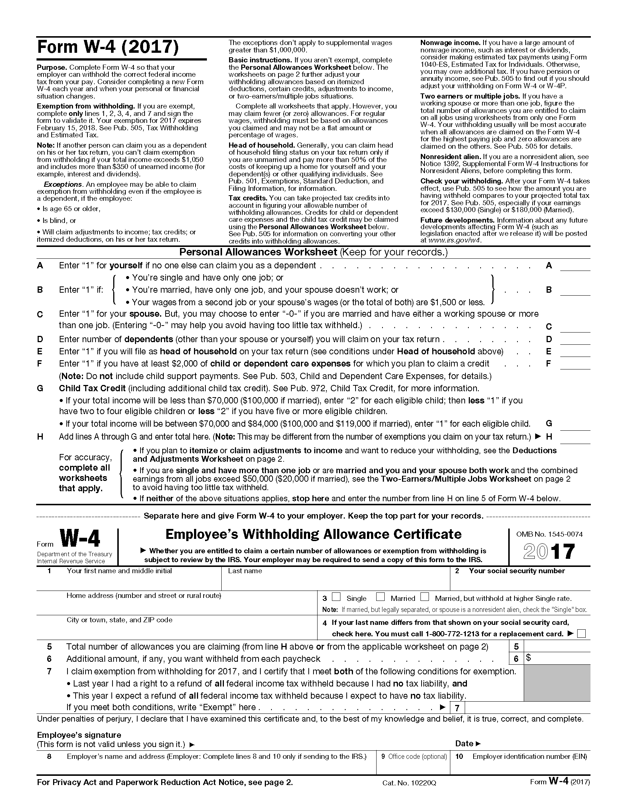

Fill out the “Personal Allowances Worksheet.” If you are independent, put a 1 on line A. If you are dependent, put 0. Read the rest of B - G and fill them in accurately. Calculate a total for line H.
Now fill in the section under “Employee’s Withholding Allowance Certificate.” Be sure to copy that total from line H to line 5. Complete the rest of the form and sign it. The lines below your signature - lines 8, 9 and 10 - will be completed by your employer.

You can find a copy of the W-4 form online here. If you want to figure out if the right amount is being withheld from your paycheck, try using this calculator.